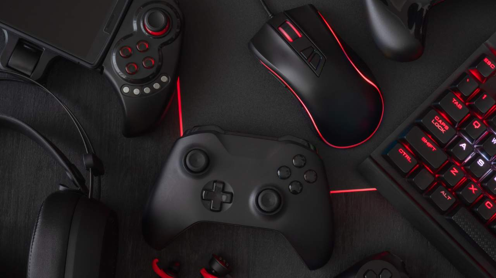
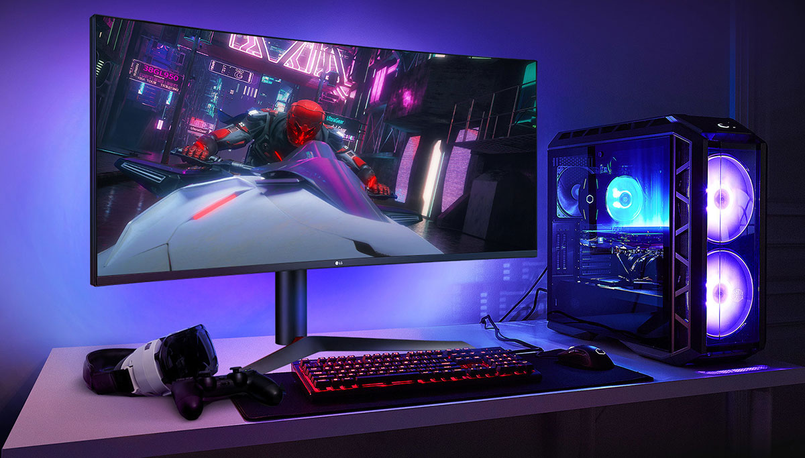
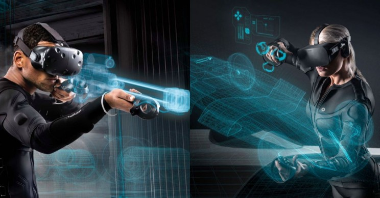
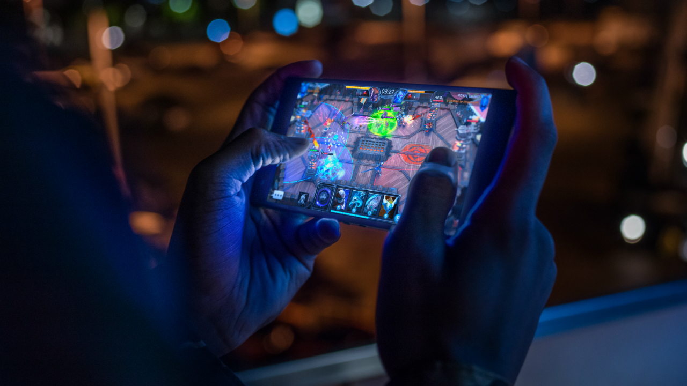
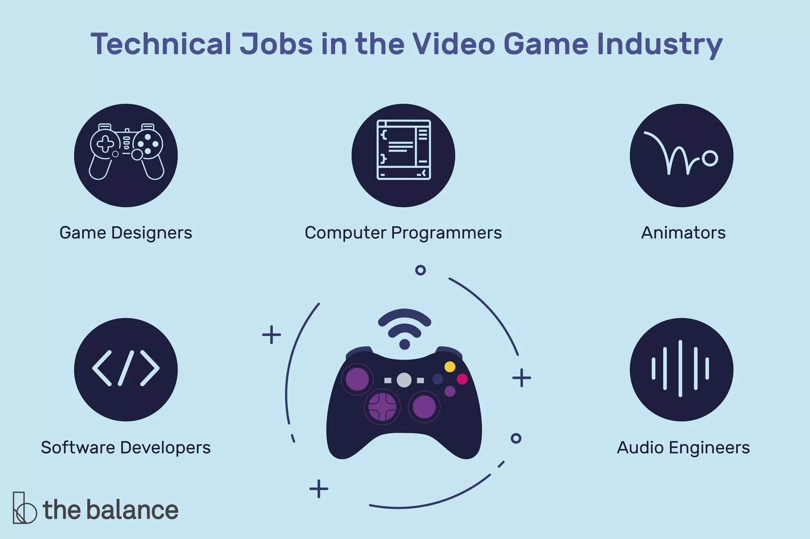
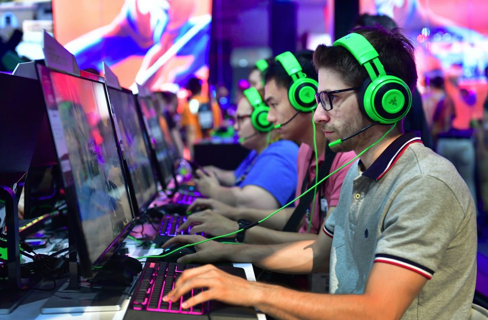

How to play?
Just tap the play now button , and you’ll be directed to new screen where you will se UP, DOWN, LEFT, RIGHT buttons. You just have to press the buttons and pass the obstacles.
Gaming
Types of Gaming Technology
|

Console Gaming
|
|---|
Console gaming is the original (and probably most well-known) form of
digital gaming. Today, Xbox and Playstation have become the two most popular consoles, offering millions of
players the ability to experience the latest in gaming technology. Consoles have been a good indicator of
the tech market as a whole. Now, consoles, like the new Xbox Series X, have specially designed microchips
that process images and power as efficiently as possible, all the while, being designed for 8K television
screens. Gaming consoles are truly pushing the limits of consumer entertainment technology.
|

PC Gaming
|
|---|
PC gaming have had a meteoric rise in gameplay with more than 1.2 billion
people using computers as their gaming tool of choice. Gaming computers are all about efficiency. Gaming PCs
have their own dedicated RAM space, GPUs and cooling systems that help to efficiently run games in
real-time. These bulked-up computers can handle graphically demanding games and can even make it easier for
streamers who need a reliable system to manage gaming at a high level and livestreaming their gameplay at
the same time. Games like Fortnite, League of Legends and Minecraft have made gaming one of the most popular
forms of entertainment in the world today.
|
Cloud Gaming
|
|---|
Cloud gaming is the newest type of video game technology making headlines.
Imagine Netflix, but for gaming. You scroll through a library of games, choose which game you want and
automatically start playing the game. No discs and no load times. Play on your phone, iPad or console.
Cloud-based gaming platforms, like Google Stadia, are making the whole gaming experience seamless and easy
to play from anywhere at any time. Cloud gaming is such a threat to traditional console gaming that
Microsoft’s head of gaming, Phil Spencer, said that Xbox is no longer concerned about competition from
Nintendo or Playstation. Rather, they’re more focused on competing with the ultra-fast cloud platforms being
built by Google and Amazon.
|

VR/AR Gaming
|
|---|
Virtual reality (VR) and augmented reality (AR) gaming are meant to put you
right in the middle of the action. Instead of playing from a third person point-of-view, VR drops people
into computer-generated environments to make them feel like they’re actually part of the game. VR offers
gamers the ability to step into magical worlds and do everything from kick around a soccer ball to fight off
hordes of monsters
|

Mobile Gaming
|
|---|
Mobile gaming makes up about 45% of the total market share of the gaming
industry with almost one-third of the entire global population having played a gaming app in 2019. Why is
mobile gaming so popular? It’s easily accessible and has games for every type of gamer. Instead of having to
strap on a headset or pop a disc into a console, mobile gaming allows us to play wherever we go and whenever
we want. It’s recently taken over television as the preferred choice of leisure activity with people
spending more than 6.5 hours per week on mobile games. The mobile gaming industry is poised for continual
growth as investments in mobile gaming startups have skyrocketed, and creativity opens up avenues for more
gamers to enjoy different types of exciting games.
Career
Gaming as a career

|  |

|
|---|
| Animators | Programmers | Writers |
|---|---|---|
| As an integral part of the video game development team, animators and other artists make video games come to life visually. Using specialized software, animators create the series of pictures that form the images in a video game, including the characters and the environment. | Computer programmers implement game designers' visions for their final products. Developers design software that makes video games work the way the designers want them to. | Writers or Game Designers fill multiple roles within the video game industry. Scriptwriters create the stories upon which games are based and write dialogue for the characters. |


.png)